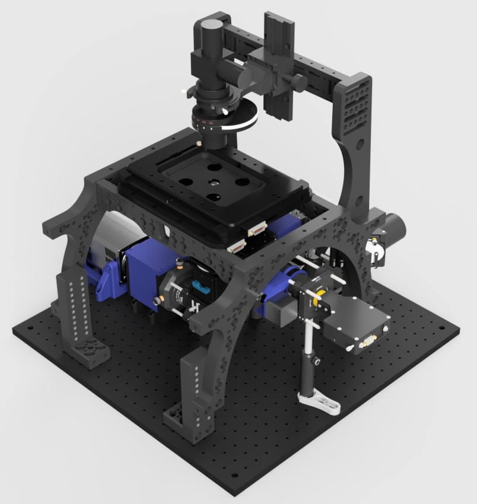
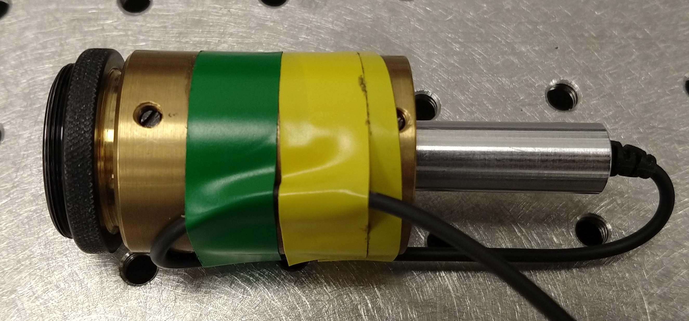
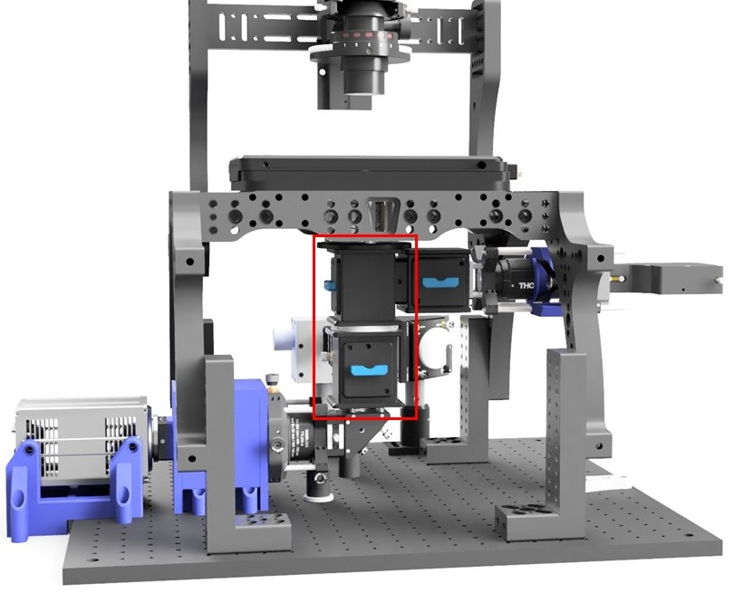

Description
The main body of the microscope contains all of the hardware to fulfill the functionality of a microscope bar fluorescence excitation.
TIRF and HILO illumination is provided by the pair of Galvo-scanning mirrors incorporated into the excitation path after the back port of the main body. This enables the use of ring TIRF\cite{RingTIRF} whereby through the course of an image the beam illuminates the coverslip from all angles reducing shadowing or artifacts caused by imperfections in the coverslip or inhomogeneities in the sample.
A cylindrical lens positioned in a 3D printed box immediately before the camera provides 3D localisation by atigmatism. This contains a rail mounting system to allow for axial adjustment of the lens position. Sliding the lens towards and away from the camera will respectively reduce and increase the severity of the astigmatism at the camera.
This module is also home to refelction based autofocus (ASI CRISP) and an infra-red camera and LED to enable brightfield imaging concurrently with fluorescence imaging. This means that image or bead based drift correction can be implemented without affecting data collection.
Unfortunately, the CRISP system and camera share the same spectral window and so would interfere with eachother if used simultaneously. Therefore, to provide drift correction across all three dimensions, a camera based system capable of this individually or a shift of operation from 800nm to 1050nm to avoid this conflict would be required.

Construction
Alignment of the main body of the microscope is greatly aided by the use of a dedicated alignment laser with interchangeable screw mounts. This allows for mounting of the laser at various ports and on sections of rail.
Infinity Cubes
The two vertically mounted Infinity Cubes need to have their filter cubes mounted the other way up to standard. This is achieved by removing the top and bottom plates, swapping them, and turning the cube upside down before fitting in to the microscope.
The desired set up can be found in the microscope 3D model.
Ring TIRF
Add software, alignment, and calibration.
Parts
Available for download here